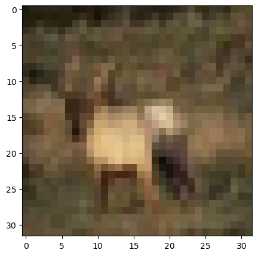
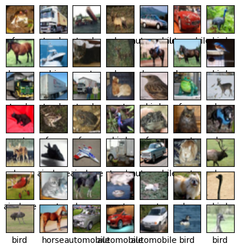
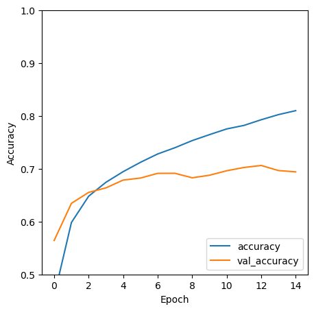
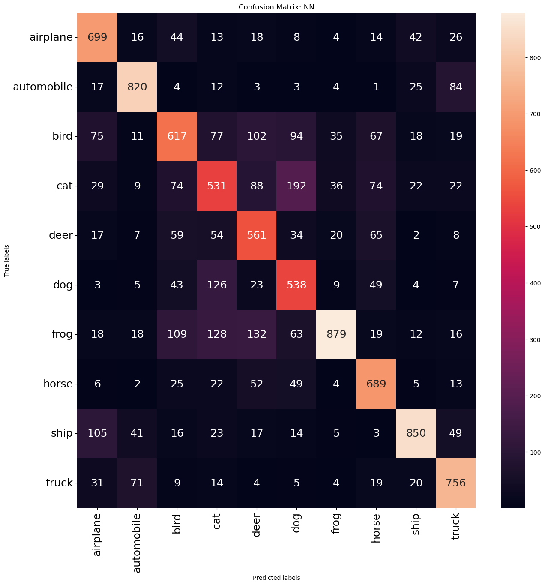

# libraries
import tensorflow as tf
from tensorflow import keras
from tensorflow.keras import layers
from sklearn.model_selection import train_test_split
import tensorflow.keras
#from tensorflow.keras.datasets import mnist
from tensorflow.keras import datasets
from tensorflow.keras.models import Sequential
from tensorflow.keras.layers import LSTM, Dense, Dropout, LSTM
from tensorflow.keras.optimizers import Adam
import matplotlib.pyplot as plt
from tensorflow.keras import layers
import numpy as np
import pandas as pdCNN Conv2D CIFAR-10 data Image Prediction
Gates’ full, raw (unedited) code Reference: Professor Ami Gates, Dept. Applied Math, Data Science, University of Colorado
Image Processing Python
https://note.nkmk.me/en/python-numpy-image-processing/
The dataset for this code
CIFAR-10 dataset consists of 60000, \(32 \times 32\), color images in 10 classes, with 6000 images per class.
How to read it in…
(train_images, train_labels), (test_images, test_labels) = datasets.cifar10.load_data()plt.rcParams["figure.figsize"] = (5,5)
(train_images, train_labels), (test_images, test_labels) = datasets.cifar10.load_data()print(type(train_images))
print(train_images.shape) ## 50000 rows, 32 by 32, depth 3 (because RGB) <class 'numpy.ndarray'>
(50000, 32, 32, 3)50000 rows, 32 by 32, depth 3 (because RGB)
# (50000, 32, 32, 3)
plt.imshow(train_images[3])<matplotlib.image.AxesImage at 0x1fccaca7f70>
## Set the input shape
input_shape=train_images.shape
print("The input shape for the training images is\n", input_shape) ## (50000, 32, 32, 3)The input shape for the training images is
(50000, 32, 32, 3)print("The input shape per image is\n", input_shape[1:]) ## (32, 32, 3) The input shape per image is
(32, 32, 3)- The “3” is because this has 3 channels (RGB)
- color channels refers to (R,G,B)
print("A single image, R of RGB, has a matrix like this:\n", train_images[0,:,:,0])
print("A single image has shape\n", train_images[0,:,:,0].shape)
print(train_images[0,:,:,2].shape)A single image, R of RGB, has a matrix like this:
[[ 59 43 50 ... 158 152 148]
[ 16 0 18 ... 123 119 122]
[ 25 16 49 ... 118 120 109]
...
[208 201 198 ... 160 56 53]
[180 173 186 ... 184 97 83]
[177 168 179 ... 216 151 123]]
A single image has shape
(32, 32)
(32, 32)Normalize pixel values to be between 0 and 1
train_images, test_images = train_images / 255.0, test_images / 255.0
class_names = ['airplane', 'automobile', 'bird', 'cat', 'deer',
'dog', 'frog', 'horse', 'ship', 'truck']Print out a visual of all the image categories
for i in range(49):
plt.subplot(7,7,i+1)
plt.xticks([])
plt.yticks([])
plt.grid(False)
plt.imshow(train_images[i])
# The CIFAR labels happen to be arrays,
# which is why you need the extra index
plt.xlabel(class_names[train_labels[i][0]])
plt.show()
Build the CNN Model
CNN_Model = tf.keras.models.Sequential([
#https://keras.io/api/layers/convolution_layers/convolution2d/
tf.keras.layers.Conv2D(input_shape=input_shape[1:], kernel_size=(3,3), filters=32, activation="relu"),
## A CNN takes tensors of shape (image_height, image_width, color_channels)
## input_shape[1:] means all but the first value. Here, our input is: ()
## https://www.tensorflow.org/api_docs/python/tf/keras/activations
tf.keras.layers.MaxPooling2D(pool_size=(2, 2)),
#https://keras.io/api/layers/pooling_layers/max_pooling2d/
tf.keras.layers.Conv2D(filters=64, kernel_size=(3, 3), activation='relu'),
tf.keras.layers.MaxPooling2D(pool_size=(2, 2)),
#tf.keras.layers.Conv2D(filters=64, kernel_size=(3, 3), activation='relu'),
tf.keras.layers.Flatten(),
tf.keras.layers.Dense(64, activation='relu'),
## https://keras.io/api/layers/core_layers/dense/
## https://www.tutorialspoint.com/keras/keras_dense_layer.htm
tf.keras.layers.Dense(10)
])Links referenced in the above code (all specifically for Keras):
- Convolution layers: https://keras.io/api/layers/convolution_layers/convolution2d/
- Activation functions: https://www.tensorflow.org/api_docs/python/tf/keras/activations
MaxPooling2D: https://keras.io/api/layers/pooling_layers/max_pooling2d/- Dense layers
CNN_Model.summary()Model: "sequential"
_________________________________________________________________
Layer (type) Output Shape Param #
=================================================================
conv2d (Conv2D) (None, 30, 30, 32) 896
max_pooling2d (MaxPooling2D (None, 15, 15, 32) 0
)
conv2d_1 (Conv2D) (None, 13, 13, 64) 18496
max_pooling2d_1 (MaxPooling (None, 6, 6, 64) 0
2D)
flatten (Flatten) (None, 2304) 0
dense (Dense) (None, 64) 147520
dense_1 (Dense) (None, 10) 650
=================================================================
Total params: 167,562
Trainable params: 167,562
Non-trainable params: 0
_________________________________________________________________Compile the model
CNN_Model.compile(optimizer='adam',
loss=tf.keras.losses.SparseCategoricalCrossentropy(from_logits=True),
## Using True above means you do not use one-hot-encoding
metrics=['accuracy'])Fit the model
(Can increase epochs to improve accuracy/training)
history = CNN_Model.fit(train_images, train_labels, epochs=15,
validation_data=(test_images, test_labels))Epoch 1/15
1563/1563 [==============================] - 29s 18ms/step - loss: 1.5002 - accuracy: 0.4592 - val_loss: 1.2472 - val_accuracy: 0.5643
Epoch 2/15
1563/1563 [==============================] - 28s 18ms/step - loss: 1.1396 - accuracy: 0.5982 - val_loss: 1.0604 - val_accuracy: 0.6345
Epoch 3/15
1563/1563 [==============================] - 30s 19ms/step - loss: 1.0121 - accuracy: 0.6480 - val_loss: 0.9944 - val_accuracy: 0.6552
Epoch 4/15
1563/1563 [==============================] - 33s 21ms/step - loss: 0.9394 - accuracy: 0.6743 - val_loss: 0.9792 - val_accuracy: 0.6637
Epoch 5/15
1563/1563 [==============================] - 34s 22ms/step - loss: 0.8809 - accuracy: 0.6944 - val_loss: 0.9364 - val_accuracy: 0.6785
Epoch 6/15
1563/1563 [==============================] - 35s 22ms/step - loss: 0.8334 - accuracy: 0.7120 - val_loss: 0.9235 - val_accuracy: 0.6823
Epoch 7/15
1563/1563 [==============================] - 33s 21ms/step - loss: 0.7843 - accuracy: 0.7279 - val_loss: 0.9012 - val_accuracy: 0.6912
Epoch 8/15
1563/1563 [==============================] - 31s 20ms/step - loss: 0.7478 - accuracy: 0.7397 - val_loss: 0.9059 - val_accuracy: 0.6913
Epoch 9/15
1563/1563 [==============================] - 35s 23ms/step - loss: 0.7081 - accuracy: 0.7532 - val_loss: 0.9399 - val_accuracy: 0.6828
Epoch 10/15
1563/1563 [==============================] - 39s 25ms/step - loss: 0.6777 - accuracy: 0.7644 - val_loss: 0.9355 - val_accuracy: 0.6876
Epoch 11/15
1563/1563 [==============================] - 33s 21ms/step - loss: 0.6458 - accuracy: 0.7752 - val_loss: 0.9291 - val_accuracy: 0.6961
Epoch 12/15
1563/1563 [==============================] - 34s 22ms/step - loss: 0.6199 - accuracy: 0.7819 - val_loss: 0.9050 - val_accuracy: 0.7023
Epoch 13/15
1563/1563 [==============================] - 36s 23ms/step - loss: 0.5914 - accuracy: 0.7926 - val_loss: 0.9149 - val_accuracy: 0.7061
Epoch 14/15
1563/1563 [==============================] - 39s 25ms/step - loss: 0.5636 - accuracy: 0.8023 - val_loss: 0.9639 - val_accuracy: 0.6965
Epoch 15/15
1563/1563 [==============================] - 43s 27ms/step - loss: 0.5429 - accuracy: 0.8098 - val_loss: 0.9838 - val_accuracy: 0.6940Evaluate the model performance
plt.plot(history.history['accuracy'], label='accuracy')
plt.plot(history.history['val_accuracy'], label = 'val_accuracy')
plt.xlabel('Epoch')
plt.ylabel('Accuracy')
plt.ylim([0.5, 1])
plt.legend(loc='lower right')<matplotlib.legend.Legend at 0x1fcd1e8ed90>
test_loss, test_acc = CNN_Model.evaluate(test_images, test_labels, verbose=2)
print(test_acc)313/313 - 2s - loss: 0.9838 - accuracy: 0.6940 - 2s/epoch - 7ms/step
0.6940000057220459Predictions
CNNpredictions=CNN_Model.predict([test_images])
print(CNNpredictions[:6,:])
print(CNNpredictions.shape)313/313 [==============================] - 3s 7ms/step
[[ 0.22624633 -6.562735 -1.2500533 6.3979464 -5.4030304 3.1768541
-0.46076846 -5.4895444 5.9910493 -5.034677 ]
[ 5.971999 6.006872 -4.6059484 -2.413846 -9.2478285 -7.888016
-9.00575 -7.2312684 13.233358 3.7723393 ]
[ 3.1501844 4.2839003 -1.8958777 0.5962222 -5.381745 -2.8783104
-3.5247862 -2.9045 4.83457 1.1363444 ]
[ 6.1331096 1.249285 -0.27116698 1.3791207 -2.5800216 -5.6724505
-1.3090563 -4.1219797 3.6117702 -1.4290131 ]
[-7.2056575 -6.9358187 2.3247123 2.8835754 6.738723 -0.6732777
6.397046 -3.4931226 -3.5519714 -5.2166886 ]
[-5.949218 -5.9886675 0.49725375 2.4373577 0.5440219 1.288848
7.78829 -2.8904848 -4.4328475 -3.8484073 ]]
(10000, 10)Confusion Matrix
from sklearn.metrics import confusion_matrix
Pred_Max_Values = np.squeeze(np.array(CNNpredictions.argmax(axis=1)))
print(Pred_Max_Values)
CNN_CM=confusion_matrix(Pred_Max_Values, test_labels)
print(CNN_CM)[3 8 8 ... 5 1 7]
[[699 16 44 13 18 8 4 14 42 26]
[ 17 820 4 12 3 3 4 1 25 84]
[ 75 11 617 77 102 94 35 67 18 19]
[ 29 9 74 531 88 192 36 74 22 22]
[ 17 7 59 54 561 34 20 65 2 8]
[ 3 5 43 126 23 538 9 49 4 7]
[ 18 18 109 128 132 63 879 19 12 16]
[ 6 2 25 22 52 49 4 689 5 13]
[105 41 16 23 17 14 5 3 850 49]
[ 31 71 9 14 4 5 4 19 20 756]]Pretty Confusion Matrix
import seaborn as sns
import matplotlib.pyplot as plt
fig, ax = plt.subplots(figsize=(15,15))
sns.heatmap(CNN_CM, annot=True, fmt='g', ax=ax, annot_kws={'size': 18})
#annot=True to annotate cells, ftm='g' to disable scientific notation
# annot_kws is size of font in heatmap
# labels, title and ticks
ax.set_xlabel('Predicted labels')
ax.set_ylabel('True labels')
ax.set_title('Confusion Matrix: NN')
ax.xaxis.set_ticklabels(class_names,rotation=90, fontsize = 18)
ax.yaxis.set_ticklabels(class_names,rotation=0, fontsize = 18)[Text(0, 0.5, 'airplane'),
Text(0, 1.5, 'automobile'),
Text(0, 2.5, 'bird'),
Text(0, 3.5, 'cat'),
Text(0, 4.5, 'deer'),
Text(0, 5.5, 'dog'),
Text(0, 6.5, 'frog'),
Text(0, 7.5, 'horse'),
Text(0, 8.5, 'ship'),
Text(0, 9.5, 'truck')]